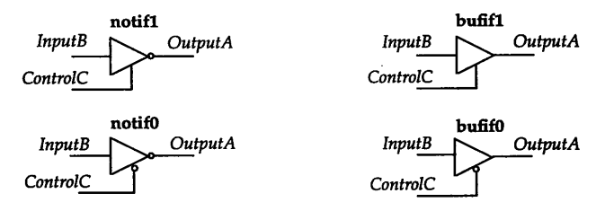
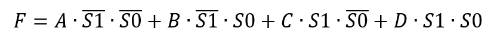

キーワード：トライステートゲート、プルアップ/プルダウン、セレクタ
ゲートレベルモデリングは、ANDゲート、NANDゲートなどの基本的な論理ユニットを使用して、より低い抽象レベルでの設計を行う方法です。ビヘイビアレベルモデリングと比較して、ゲートレベルモデリングはハードウェアの実装方法により重点を置きます。つまり、基本的なゲート回路を接続してさまざまな論理機能を実現します。ビヘイビアレベルモデリングも最終のには基本的なゲート回路ネットワークに合成されますが、複雑な設計の場合、ビヘイビアレベルモデリングの効率はゲートレベルモデリングよりはるかに高くなります。したがって、現在のVerilogは主にデジタル設計のビヘイビアレベル（RTL）を記述するために使用され、設計のアルゴリズムやフローにのみ注目し、具体的なハードウェア実装方法を特に気にする必要はありません。
一部の設計、例えばゲーテッドクロックでは、基本ゲートユニットを使用して回路の制御性と信頼性を高める必要があります。
多入力ゲート
多入力ゲートは単一の出力のみを持ち、1つまたは複数の入力端子を持ちます。Verilogに組み込まれている多入力ゲートは次のとおりです。
and(ANDゲート) nand(NANDゲート) or(ORゲート) nor(NORゲート) xor(XORゲート) xnor(XNORゲート)
基本的な論理ゲートユニットを使用して簡単な論理機能を実現する場合、モジュールのインスタンス化を使用するだけでよいです。
ゲートレベルユニットの最初のポートは出力であり、後続のポートは入力です。インスタンス化して呼び出す際に注意する必要があります。
ゲートレベルユニットのインスタンスを呼び出すとき、インスタンス名を指定しなくてもよく、これによりコード作成が容易になります。
入力ポートが2つを超える場合、入力信号をポートリストに追加で並べるだけでよく、Verilogが自動的に認識します。
例
and a1 (OUTX, IN1, IN2) ;
nand na1 (OUTX1, IN1, IN2) ;
or or1 (OUTY, IN1, IN2) ;
nor nor1 (OUTY1, IN1, IN2) ;
//3 input
xor xor1 (OUTZ, IN1, IN2, IN3) ;
//no instantiation name
xnor (OUTZ1, IN1, IN2) ;
多入力ゲートの真理値表は以下のとおりです。出力が現れないことに注意してください。Z。

多出力ゲート
多出力ゲートは単一の入力を持ち、1つまたは複数の出力端子を持ちます。またバッファ（buffer）とも呼ばれ、バッファリングや遅延の役割を果たします。
組み込みの多出力ゲートは次のとおりです。
buf(缓冲器) not(非门)
多入力ゲートと同様に、モジュールのインスタンス化を使用して多出力ゲートを呼び出すことができます。
ゲートレベルユニットの最初のポートは出力で、最後のポートは入力です。出力ポートが1つを超える場合は、出力信号を最後の入力ポートの前に並べる必要があります。
インスタンス化する際にインスタンス名を指定しなくてもよいです。
例
buf buf1 (OUTX2, IN1) ;
//2 output
buf buf2 (OUTY2, OUTY3, IN2) ;
//no instantiation name
not (OUTZ3, IN3) ;
多出力ゲートの真理値表は以下のとおりです。出力が現れないことに注意してください。Z。
| buf | 0 | 1 | x | z | not | 0 | 1 | x | z | |
|---|---|---|---|---|---|---|---|---|---|---|
| 出力 | 0 | 1 | x | x | 出力 | 1 | 0 | x | x |
トライステートゲート
Verilogには、制御端子付きのバッファゲートユニットが4つ用意されており、トライステートゲートと呼ばれます。制御信号が有効な場合のみデータが正常に伝達され、それ以外の場合は出力がハイインピーダンス状態になります。Z。
4つのトライステートゲートの名前と記号は次のとおりです。

インスタンス化するとき、トライステートゲートの最初のポートは出力端子、2番目のポートはデータ入力端子、3番目のポートは制御入力端子です。インスタンス化する際は信号の並び順を一致させる必要があります。
トライステートゲートは出力ポートが1つを超えることをサポートしませんが、インスタンス化する際にインスタンス名を指定しなくてもよいです。
例
bufif1 buf1 (OUTX, IN1, CTRL1) ;
bufif0 buf2 (OUTY, IN1, CTRL2) ;
notif1 buf3 (OUTZ, IN1, CTRL3) ;
//no instantiation name
notif0 (OUTX1, IN1, CTRL4) ;
トライステートゲートの真理値表は以下のとおりです。
表中にはオプションの項目もあります。例えば、1/zは、入力端子と制御端子の信号強度に応じて、出力端子が1になる可能性もあれば、zになる可能性もあることを示します。z。
| bufif1 | 制御端子 | bufif0 | 制御端子 | |||||||
|---|---|---|---|---|---|---|---|---|---|---|
| 0 | 1 | x | z | 0 | 1 | x | z | |||
| 0 | z | 0 | 0/z | 0/z | 0 | 0 | z | 0/z | 0/z | |
| 1 | z | 1 | 1/z | 1/z | 1 | 1 | z | 1/z | 1/z | |
| x | z | x | x | x | x | x | z | x | x | |
| z | z | x | x | x | z | x | z | x | x |
| notif1 | 制御端子 | notif0 | 制御端子 | |||||||
|---|---|---|---|---|---|---|---|---|---|---|
| 0 | 1 | x | z | 0 | 1 | x | z | |||
| 0 | z | 1 | 1/z | 1/z | 0 | 1 | z | 1/z | 1/z | |
| 1 | z | 0 | 0/z | 0/z | 1 | 0 | z | 0/z | 0/z | |
| x | z | x | x | x | x | x | z | x | x | |
| z | z | x | x | x | z | x | z | x | x |
トライステートゲートを使用して構成可能な入出力PAD機能を実装する例は、このチュートリアルの「1.2 スイッチレベルモデリング」のセクションを参照してください。
トライステートゲートを使用して構成可能なプルアップ/プルダウンPAD機能を実装する例は、「Verilog チュートリアル」の「5.1 Verilog モジュールとポート」の章を参照してください。
プルアップ/プルダウン抵抗
プルアップは、不確定な信号を抵抗を介してハイレベルにクランプすることです。
プルダウンは、不確定な信号を抵抗を介してグランドに接続し、ローレベルに固定することです。
モジュールポートのプルアップまたはプルダウン抵抗は、電流制限、駆動能力の向上、静電気防止などの役割があり、回路を効果的に保護できます。
信号方向が入力で入力信号がない（ハイインピーダンス状態）場合、プルアップはその信号の論理値を1に設定します。1プルダウンはその信号の論理値を0に設定します。0。
Verilogは、信号にプルアップ/プルダウン抵抗を設定するための論理ゲートユニットを提供しており、主にモジュールのポート信号に使用されます。
この種のゲートユニットには入力がなく、出力のみがあります。キーワードは次のとおりです。
pullup(设置上拉) pulldown(设置下拉)
インスタンス化して呼び出す際は、プルアップ/プルダウン抵抗を設定する必要がある信号を記入するだけでよいです。
インスタンス名も指定しなくてもよいです。
pullup p1 (IN1); pulldown (OUTX);
ここでプルアップ/プルダウン抵抗を設定すると、後から変更できません。「Verilog チュートリアル」の「5.1 Verilog モジュールとポート」の章では、トライステートゲートバッファを使用して構成可能なプルアップ/プルダウンPAD機能を実装した例があります。ぜひ参考にしてください。
4選1マルチプレクサ
以下では、4選1セレクタの実装方法を比較して、ゲートレベルモデリングがビヘイビアレベルモデリングよりも煩雑であることを説明します。
入力はA、B、C、D、出力はF、選択信号はSEL1、SEL0であり、4路セレクタの式は次のとおりです。

ゲートレベルモデリングは次のとおりです。
例
input A, B, C, D ,
input S0, S1,
output F );
//reversing
wire S0R, S1R ;
not (S0R, S0) ;
not (S1R, S1) ;
//logic and
wire AAND, BAND, CAND, DAND ;
and (AAND, A, S1R, S0R);
and (BAND, B, S1R, S0);
and (CAND, C, S1, S0R);
and (DAND, D, S1, S0);
//logic or
or (F, AAND, BAND, CAND, DAND) ;
endmodule
ビヘイビアレベルモデリングは次のとおりです。
例
input A, B, C, D ,
input S0, S1,
output F );
assign F = {S1, S0} == 2'b00 ? A :
{S1, S0} == 2'b01 ? B :
{S1, S0} == 2'b10 ? C :
{S1, S0} == 2'b11 ? D : 0 ;
endmodule
ビヘイビアレベルモデリングは合成後の結果がゲートレベルモデリングと一致する可能性がありますが、設計時には、明らかにビヘイビアレベルモデリングの方が可読性と簡潔性に優れています。